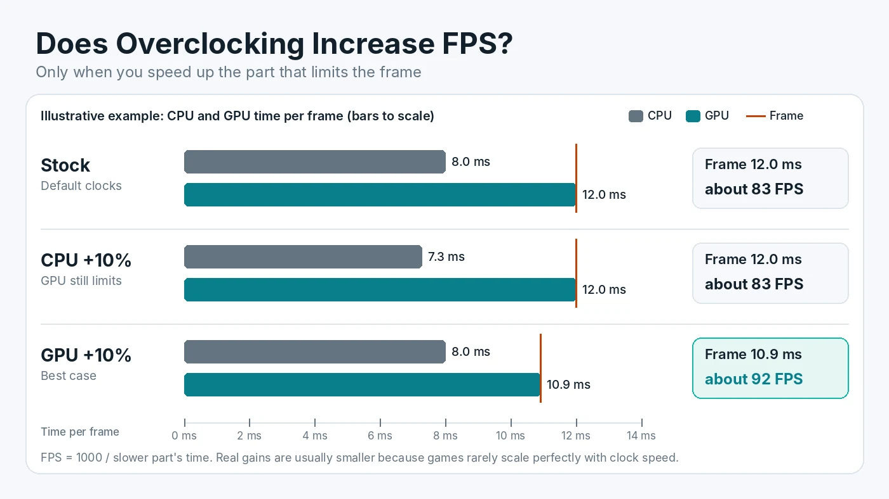

Does Overclocking Increase FPS? CPU vs GPU Overclocking
Overclocking can increase FPS, but only when you speed up the part that is actually holding the frame rate back. Raise the clock on a graphics card that is already waiting for the processor and the counter barely moves. Overclock the component that sets the pace, and you can usually gain a few extra frames for free. This guide explains when overclocking helps, what each type of overclock needs, what it costs in heat, power and warranty cover, and how to test whether it was worth it on your own PC.

What Overclocking Actually Changes
Overclocking means running a chip faster than its default settings. On a graphics card, that usually means raising the core clock, memory clock or power limit. On a processor, it can mean higher boost clocks or a bigger power budget. On memory, it means higher speed or tighter timings.
A faster clock lets the chip finish each piece of work sooner. In a game, the CPU and GPU each have to finish their share of every frame. The frame is ready only when the slower of the two is done. That one rule explains almost every overclocking result you will see.
Overclock the Part That Sets Your Frame Rate
Look at the chart above. In this illustrative example, the processor needs 8 ms per frame and the graphics card needs 12 ms. The frame takes 12 ms, which is about 83 FPS. Overclocking the CPU by 10% cuts its time to about 7.3 ms, but the frame still waits 12 ms for the GPU, so FPS stays the same. Overclocking the GPU by 10% could, in the best case, cut its time to about 10.9 ms, which is roughly 92 FPS.
Real games rarely scale that cleanly, but the direction holds. Before touching any clock, check which part is holding back your frame rate. A quick rule of thumb:
- GPU usage near full load (roughly 95% or more) during play usually means the graphics card is the limit. A GPU overclock is the one most likely to help.
- GPU usage well below full load with no FPS cap in place often points to a CPU limit. A CPU or memory overclock is more likely to help, and a GPU overclock will do little.
GPU Overclocking: Usually the Easiest Gain
For most gaming PCs, the graphics card is the best place to start. Many games at 1440p and 4K are GPU-limited, and both major vendors include tuning tools in their software.
- NVIDIA. The NVIDIA app has a performance section with an automatic tuning option for supported GeForce RTX cards. It scans the card and applies a modest clock offset for you.
- AMD. In AMD Software: Adrenalin Edition, the Performance Tuning page offers automatic GPU options named Overclock GPU, Overclock VRAM and Undervolt GPU, plus Quiet, Balanced and Rage presets and a manual mode.
Modern graphics cards already boost on their own until they hit a power, temperature or voltage limit. That means the extra headroom is often small, and gains are usually a few percent rather than a jump to the next performance tier. Raising the power limit can help a card hold higher clocks, but it also raises heat, fan noise and power draw. If your power supply is close to its rating, check power supply headroom for a higher power limit first.
Video memory overclocks can help in some games, especially at high resolutions. Modern GDDR memory can detect errors and resend data when pushed too far, which can quietly lower performance instead of crashing. Always measure FPS after each memory step rather than assuming a higher number is faster.
CPU Overclocking: What You Need
CPU overclocking depends on both the processor and the motherboard.
- Intel. Intel says unlocked processors with a K or X in the model number are needed for its Extreme Tuning Utility. Full overclocking needs a board that supports it, such as a Z-series chipset. B-series and W-series boards only support memory overclocking.
- AMD. AMD Ryzen Master offers Auto Overclock, plus controls for Precision Boost Overdrive (PBO) and Curve Optimizer. PBO raises the power and current limits the chip is allowed to use, so it can boost higher for longer when cooling allows.
Like graphics cards, modern CPUs already boost close to their practical limit out of the box. In many games, a CPU overclock adds only a small amount of FPS, and the gain is often clearest in the 1% lows of CPU-heavy titles. It also adds heat. A processor that already runs hot may simply throttle back, so learn the safe temperature ranges for gaming CPUs before raising any limit.
Memory: The Overclock Most PCs Should Try First
Many PCs run their RAM below its rated speed because the motherboard starts at a safe default. Turning on the kit's XMP or EXPO profile runs the memory at the speed it was sold for. If you have not done it yet, start by switching on the memory kit's rated profile. In CPU-limited games it can do as much as a manual CPU overclock.
The Costs: Heat, Power, Stability and Warranty
Overclocking is not free, even when it works:
- Heat and noise. Higher clocks and voltage mean more heat. Fans spin faster, and a weak cooler may cancel out the gain.
- Power draw. A higher power limit uses more electricity and puts more load on the power supply.
- Stability. An overclock that passes a short test can still crash in one specific game hours later.
- Warranty. AMD states that its product warranty does not cover damage caused by overclocking, even when it is enabled through AMD hardware or software, and that using PBO invalidates the AMD product warranty. Graphics card and system makers have their own rules, so check yours before you start.
Laptops are a special case: most are limited by power and cooling, and many lock clock controls. On a laptop, choosing the right performance mode usually matters more than any overclock.
How to Overclock Safely, Step by Step
- Record a baseline. Run the same game scene or built-in benchmark three times and note average FPS, 1% lows, temperatures and clock speeds.
- Update first. Install the latest graphics driver and, for CPU tuning, a current BIOS.
- Start with automatic tuning. The NVIDIA app, AMD Adrenalin or Ryzen Master can find a reasonable starting point with less risk of a bad manual setting.
- Change one thing at a time. If you tune manually, raise one clock in small steps and test after each step. Leave voltage alone until you understand the trade-off.
- Test in real games. Stress tests are useful, but also play the games you care about for at least half an hour. Crashes, driver resets, flickering or strange artifacts mean you should step back.
- Watch temperatures. If the chip reaches its thermal limit, it will slow itself down and the overclock is wasted.
- Save a profile you can undo. Most tools have a reset button, and a BIOS can be returned to defaults if the PC will not boot.
How to Tell Whether It Worked
Repeat the baseline test with the overclock applied and compare the middle result of three runs. Look at three things:
- Average FPS. A gain of a few percent is typical. If the result is within normal run-to-run variation, the overclock is not doing much.
- 1% lows. Higher lows mean smoother play, which you often notice more than the average.
- Clocks under load. If the clock speed in the overlay does not rise, the chip may be held back by its power or temperature limit.
If the gain is tiny and the card is louder, there is a good case for going the other way. Trading a little clock speed for lower voltage often keeps FPS almost the same while cutting heat and noise.
When Overclocking Is Not Worth It
Skip it, or keep it to automatic tuning, if your FPS is capped by V-Sync or a frame limiter, if the PC already runs hot, if you rely on the warranty, or if the game is held back by something a clock cannot fix, such as running out of VRAM or system RAM. A badly mismatched build needs an upgrade or different settings, not an extra 100 MHz.
Conclusion
Overclocking does increase FPS, but only when it speeds up the component that sets the frame rate, and the gain on modern hardware is usually modest. Start by finding your bottleneck, enable your memory profile, then try the automatic tuning tools before anything manual. Measure before and after, and keep the change only if it is stable, cool and clearly faster. To see how evenly your processor and graphics card are matched in the first place, try the free PC Bottleneck Calculator.
Frequently Asked Questions
How much FPS does overclocking add?
It depends on the hardware and the game, but on modern CPUs and GPUs the gain is usually a few percent. Chips already boost close to their limit by default. You only see a gain when you overclock the part that limits your frame rate.
Should I overclock my CPU or my GPU for gaming?
Overclock the part that is the bottleneck. If GPU usage stays near full load, the graphics card sets the frame rate, so a GPU overclock is more likely to help. If GPU usage is well below full load without an FPS cap, the processor or memory is more likely to be the limit.
Is overclocking safe?
Modest overclocks within the limits of the official tools are generally low risk, as long as temperatures stay in a safe range and the system is stable. Raising voltage adds more risk. Crashes and artifacts mean you should step back to the last stable setting.
Does overclocking void the warranty?
It can. AMD says its product warranty does not cover damage caused by overclocking and that using Precision Boost Overdrive invalidates the AMD product warranty. Graphics card and PC makers set their own policies, so check yours before you start.
Can I overclock any CPU?
No. On Intel, you need an unlocked processor with a K or X in the model number and a motherboard that supports full overclocking, such as a Z-series board. On AMD, Ryzen Master provides overclocking controls, but support depends on the specific processor and motherboard.
Sources
Official documentation referenced in this guide: